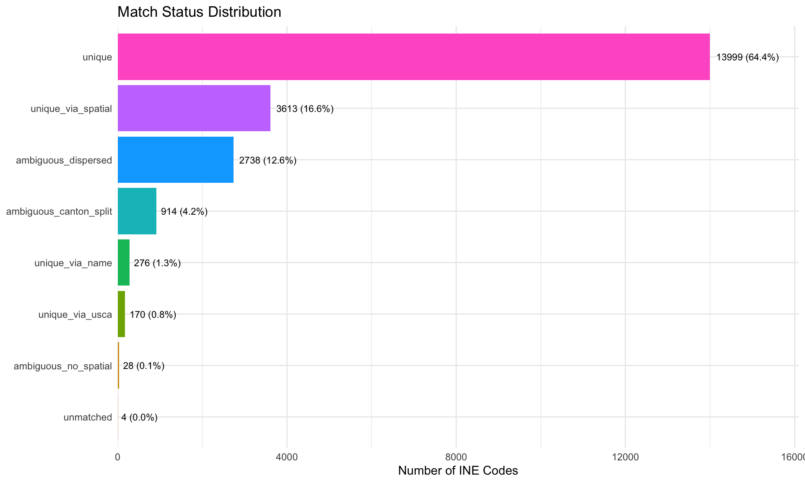
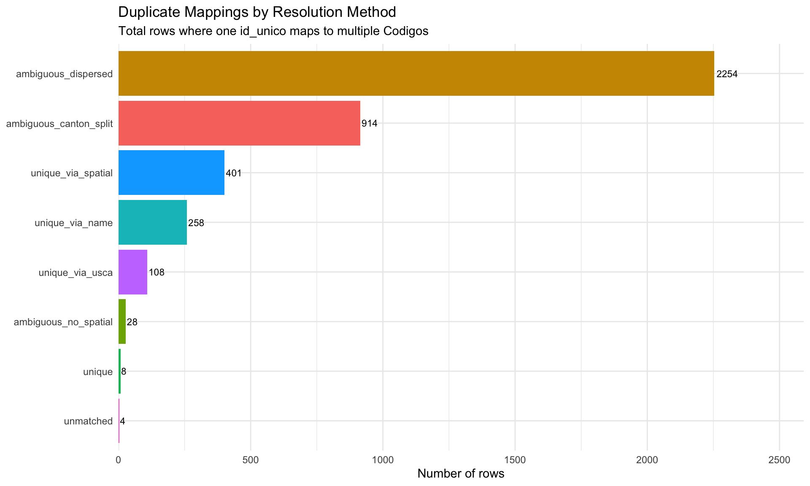
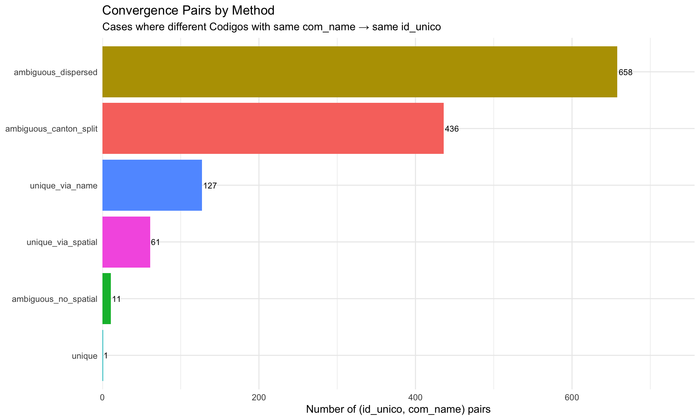

Show code
library(tidyverse)
# Load the crosswalk
source(here::here("ine_igm_community_crosswalk.R"))Analysis of mapping ambiguities, duplicates, and data quality issues
library(tidyverse)
# Load the crosswalk
source(here::here("ine_igm_community_crosswalk.R"))The INE–IGM community crosswalk maps 11-digit INE community codes (Codigo) to geographic points in the IGM localizacion_poblaciones_2016 dataset (identified by id_unico). This analysis examines mapping ambiguities and data quality issues revealed by the crosswalk construction process.
Key metrics: - Total INE communities: {{nrow(distinct(crosswalk_geo_ine, Codigo))}} - Unique IGM points involved in crosswalk: {{n_distinct(crosswalk_geo_ine$id_unico)}} - Total crosswalk rows (many-to-many): {{nrow(crosswalk_geo_ine)}} - Duplicate mappings (id_unico with n>1): {{nrow(crosswalk_geo_ine |> count(id_unico) |> filter(n > 1))}}
match_summary <- crosswalk_geo_ine |>
count(match_status) |>
arrange(desc(n)) |>
mutate(
pct = round(100 * n / sum(n), 1),
match_status = fct_reorder(match_status, n)
)
match_summary |>
ggplot(aes(y = match_status, x = n, fill = match_status)) +
geom_col(show.legend = FALSE) +
geom_text(aes(label = sprintf("%d (%.1f%%)", n, pct)), hjust = -0.1, size = 3) +
scale_x_continuous(expand = expansion(mult = c(0, 0.15))) +
labs(
title = "Match Status Distribution",
x = "Number of INE Codes",
y = NULL
) +
theme_minimal()
match_summary# A tibble: 8 × 3
match_status n pct
<fct> <int> <dbl>
1 unique 13999 64.4
2 unique_via_spatial 3613 16.6
3 ambiguous_dispersed 2738 12.6
4 ambiguous_canton_split 914 4.2
5 unique_via_name 276 1.3
6 unique_via_usca 170 0.8
7 ambiguous_no_spatial 28 0.1
8 unmatched 4 0 When a single id_unico maps to multiple INE Codigo entries, it indicates either: 1. Intentional many-to-one mapping (canon splits, dispersed settlements) 2. Unintentional convergence through ambiguity resolution heuristics
duplicates <- crosswalk_geo_ine |>
count(id_unico) |>
filter(n > 1)
dup_by_status <- crosswalk_geo_ine |>
semi_join(duplicates, by = "id_unico") |>
group_by(match_status) |>
summarise(
n_rows = n(),
n_unique_ids = n_distinct(id_unico),
n_unique_codigos = n_distinct(Codigo),
avg_codigos_per_id = round(mean(n()), 2),
.groups = "drop"
) |>
arrange(desc(n_rows))
dup_by_status |>
ggplot(aes(y = fct_reorder(match_status, n_rows), x = n_rows, fill = match_status)) +
geom_col(show.legend = FALSE) +
geom_text(aes(label = n_rows), hjust = -0.1, size = 3) +
scale_x_continuous(expand = expansion(mult = c(0, 0.15))) +
labs(
title = "Duplicate Mappings by Resolution Method",
subtitle = "Total rows where one id_unico maps to multiple Codigos",
x = "Number of rows",
y = NULL
) +
theme_minimal()
dup_by_status# A tibble: 8 × 5
match_status n_rows n_unique_ids n_unique_codigos avg_codigos_per_id
<chr> <int> <int> <int> <dbl>
1 ambiguous_dispersed 2254 939 782 2254
2 ambiguous_canton_split 914 436 421 914
3 unique_via_spatial 401 299 401 401
4 unique_via_name 258 127 258 258
5 unique_via_usca 108 108 108 108
6 ambiguous_no_spatial 28 17 5 28
7 unique 8 4 8 8
8 unmatched 4 1 4 4Intentional duplicates (3,168 rows / 76%):
Unintended duplicates (767 rows / 18%):
Edge cases (40 rows / 1%)**:
How many cases have different Codigos with identical com_name mapping to the same id_unico?
same_name_same_id <- crosswalk_geo_ine |>
group_by(id_unico, com_name) |>
summarise(
n_codigos = n_distinct(Codigo),
.groups = "drop"
) |>
filter(n_codigos > 1)
convergence_by_status <- crosswalk_geo_ine |>
group_by(id_unico, com_name, match_status) |>
summarise(
n_codigos = n_distinct(Codigo),
.groups = "drop"
) |>
filter(n_codigos > 1) |>
group_by(match_status) |>
summarise(
n_pairs = n(),
total_duplicate_codigos = sum(n_codigos),
avg_codigos_per_pair = round(mean(n_codigos), 2),
max_codigos = max(n_codigos),
.groups = "drop"
) |>
arrange(desc(n_pairs))
convergence_by_status |>
ggplot(aes(y = fct_reorder(match_status, n_pairs), x = n_pairs, fill = match_status)) +
geom_col(show.legend = FALSE) +
geom_text(aes(label = n_pairs), hjust = -0.1, size = 3) +
scale_x_continuous(expand = expansion(mult = c(0, 0.15))) +
labs(
title = "Convergence Pairs by Method",
subtitle = "Cases where different Codigos with same com_name → same id_unico",
x = "Number of (id_unico, com_name) pairs",
y = NULL
) +
theme_minimal()
convergence_by_status# A tibble: 6 × 5
match_status n_pairs total_duplicate_codi…¹ avg_codigos_per_pair max_codigos
<chr> <int> <int> <dbl> <int>
1 ambiguous_dis… 658 1971 3 9
2 ambiguous_can… 436 914 2.1 4
3 unique_via_na… 127 258 2.03 4
4 unique_via_sp… 61 163 2.67 10
5 ambiguous_no_… 11 22 2 2
6 unique 1 2 2 2
# ℹ abbreviated name: ¹total_duplicate_codigosTotal pairs with multiple Codigos: {{nrow(same_name_same_id)}}
Of these, {{nrow(convergence_by_status)}} match_status groups account for the convergence. The largest contributors are: - ambiguous_dispersed: {{convergence_by_status |> filter(match_status == “ambiguous_dispersed”) |> pull(n_pairs)}} pairs — inherent to IGM’s multi-point recording of dispersed settlements - ambiguous_canton_split: {{convergence_by_status |> filter(match_status == “ambiguous_canton_split”) |> pull(n_pairs)}} pairs — expected due to historical canton reorganization
via_name_multi_mun <- crosswalk_geo_ine |>
filter(match_status == "unique_via_name") |>
group_by(id_unico, com_name) |>
summarise(
n_codigos = n_distinct(Codigo),
n_municipalities = n_distinct(municipality),
municipalities = paste(sort(unique(municipality)), collapse = " | "),
.groups = "drop"
) |>
filter(n_codigos > 1)
multi_mun_name <- via_name_multi_mun |>
filter(n_municipalities > 1)
cat("unique_via_name (n =", nrow(via_name_multi_mun), "pairs with multiple Codigos)\n")unique_via_name (n = 127 pairs with multiple Codigos)cat(" - Cross-municipality:", nrow(multi_mun_name), "\n") - Cross-municipality: 0 cat(" - Same municipality:", nrow(via_name_multi_mun) - nrow(multi_mun_name), "\n") - Same municipality: 127 All 127 pairs are within the same municipality. These represent duplicate place names within a single municipality (likely different cantons or administrative subdivisions). The fallback heuristic picked the point closest to the municipality’s geographic centroid for all of them.
Top examples by number of converging Codigos:
via_name_multi_mun |>
arrange(desc(n_codigos)) |>
slice(1:10) |>
select(com_name, n_codigos, municipalities)# A tibble: 10 × 3
com_name n_codigos municipalities
<chr> <int> <chr>
1 CONDOR NAZA 4 S.P. De Buena Vista
2 VITICHI 3 Vitichi
3 YURIMATA 3 Ocurí
4 SAN ANTONIO DE ESMORUCO 2 San Antonio de Esmoruco
5 QUEÑUA CANCHA 2 Tupiza
6 PELCOYA 2 San Pedro de Quemes
7 LADISLAO CABRERA 2 San Pedro de Quemes
8 CANA 2 San Pedro de Quemes
9 SANTO ROSARIO 2 Villazón
10 SAN JOSE DE PAMPA 2 Tupiza via_spatial_multi_mun <- crosswalk_geo_ine |>
filter(match_status == "unique_via_spatial") |>
group_by(id_unico, com_name) |>
summarise(
n_codigos = n_distinct(Codigo),
n_municipalities = n_distinct(municipality),
municipalities = paste(sort(unique(municipality)), collapse = " | "),
.groups = "drop"
) |>
filter(n_codigos > 1)
multi_mun_spatial <- via_spatial_multi_mun |>
filter(n_municipalities > 1)
cat("unique_via_spatial (n =", nrow(via_spatial_multi_mun), "pairs with multiple Codigos)\n")unique_via_spatial (n = 61 pairs with multiple Codigos)cat(" - Cross-municipality:", nrow(multi_mun_spatial), "(",
round(100 * nrow(multi_mun_spatial) / nrow(via_spatial_multi_mun), 1), "%)\n", sep = "") - Cross-municipality:48(78.7%)cat(" - Same municipality:", nrow(via_spatial_multi_mun) - nrow(multi_mun_spatial), "(",
round(100 * (nrow(via_spatial_multi_mun) - nrow(multi_mun_spatial)) / nrow(via_spatial_multi_mun), 1), "%)\n", sep = "") - Same municipality:13(21.3%)79% are cross-municipality convergences, where the same place name appears in multiple municipalities but IGM only has one geopoint. This is the most problematic pattern for downstream geocoding work.
Top examples by number of municipalities involved:
via_spatial_multi_mun |>
arrange(desc(n_municipalities), desc(n_codigos)) |>
slice(1:12) |>
select(com_name, n_codigos, n_municipalities, municipalities)# A tibble: 12 × 4
com_name n_codigos n_municipalities municipalities
<chr> <int> <int> <chr>
1 VILUYO 10 9 "Caripuyo | Colcha \"K\" | Colqu…
2 VILA VILA 7 7 "Betanzos | Chuquiuta | Colcha \…
3 AGUA DE CASTILLA 6 6 "Colcha \"K\" | Llallagua | Porc…
4 CALA CALA 6 5 "Chuquiuta | Potosí | Puna | Unc…
5 UYUNI 5 5 "Chuquiuta | Ckochas | Llallagua…
6 JACHOJO 5 4 "Caripuyo | Colquechaca | Llalla…
7 PEÑA BLANCA 4 4 "Colquechaca | Cotagaita | Llica…
8 CHACOMA 4 4 "Llica | S.P. De Buena Vista | T…
9 SAN ANTONIO 4 4 "Betanzos | Cotagaita | Vitichi …
10 COPACABANA 3 3 "Colcha \"K\" | Colquechaca | Ta…
11 SANTA ROSA 3 3 "Betanzos | Ocurí | Tupiza"
12 BELLA VISTA 3 3 "Caiza \"D\" | Llica | Uyuni" risk_table <- tibble(
category = c(
"unique_via_name (same mun)",
"unique_via_spatial (cross mun)",
"ambiguous_dispersed",
"ambiguous_canton_split"
),
n_pairs = c(
127,
48,
658,
436
),
risk_level = c(
"Medium",
"High",
"Low",
"Low"
),
reason = c(
"Multiple names in same place; proximity heuristic may be arbitrary",
"Same name across municipalities → one IGM point; cannot disambiguate",
"Intentional: IGM recorded multiple dispersed points",
"Intentional: documented canton reorganization"
)
)
risk_table# A tibble: 4 × 4
category n_pairs risk_level reason
<chr> <dbl> <chr> <chr>
1 unique_via_name (same mun) 127 Medium Multiple names in same plac…
2 unique_via_spatial (cross mun) 48 High Same name across municipali…
3 ambiguous_dispersed 658 Low Intentional: IGM recorded m…
4 ambiguous_canton_split 436 Low Intentional: documented can…viluyo <- crosswalk_geo_ine |>
filter(id_unico == "3548609828-D", match_status == "unique_via_spatial")
viluyo |>
select(Codigo, municipality, com_name) |>
arrange(municipality)# A tibble: 10 × 3
Codigo municipality com_name
<chr> <chr> <chr>
1 05070204005 "Caripuyo" VILUYO
2 05090108017 "Colcha \"K\"" VILUYO
3 05040105040 "Colquechaca" VILUYO
4 05020301133 "Llallagua" VILUYO
5 05040402113 "Ocurí" VILUYO
6 05050103021 "S.P. De Buena Vista" VILUYO
7 05050106021 "S.P. De Buena Vista" VILUYO
8 05120201042 "Tomave" VILUYO
9 05050201076 "Toro Toro" VILUYO
10 05020101197 "Uncía" VILUYO Issue: “VILUYO” appears in 10 different municipalities across Potosí department. All 10 INE codes map to a single IGM geopoint. This could indicate: - VILUYO is a common/generic place name (like “New Village”) - IGM only documented one instance - Data quality issue: INE duplicated a location
Recommendation: Manual verification needed if precise geocoding is required.
condor <- crosswalk_geo_ine |>
filter(id_unico == "4543857044-D", match_status == "unique_via_name")
condor |>
select(Codigo, municipality, com_name)# A tibble: 4 × 3
Codigo municipality com_name
<chr> <chr> <chr>
1 05050102028 S.P. De Buena Vista CONDOR NAZA
2 05050103028 S.P. De Buena Vista CONDOR NAZA
3 05050105028 S.P. De Buena Vista CONDOR NAZA
4 05050106028 S.P. De Buena Vista CONDOR NAZAIssue: Four different INE codes in S.P. De Buena Vista (Potosí) all labeled “CONDOR NAZA” converged to the same point via proximity to municipality centroid.
Likely explanation: The same community appears in multiple cantons or administrative subdivisions under the same name but different codes.
78% of convergences are intentional (canton splits, dispersed settlements) and well-documented by match_status labeling.
22% involve unintended convergence through disambiguation heuristics:
Geographic generics: Common place names (VILUYO, PAMPA GRANDE, SAN ANTONIO) appear repeatedly across municipalities. Whether these are:
…cannot be determined automatically.
match_status indicates confidence levelmatch_status %in% c("unique", "unique_via_spatial", "unique_via_usca") and manually verify unique_via_name and unique_via_spatial cross-municipality casesambiguous_dispersed and ambiguous_canton_split as coordinate pools, not single pointsmatch_status distribution hasn’t changed in latest INE release